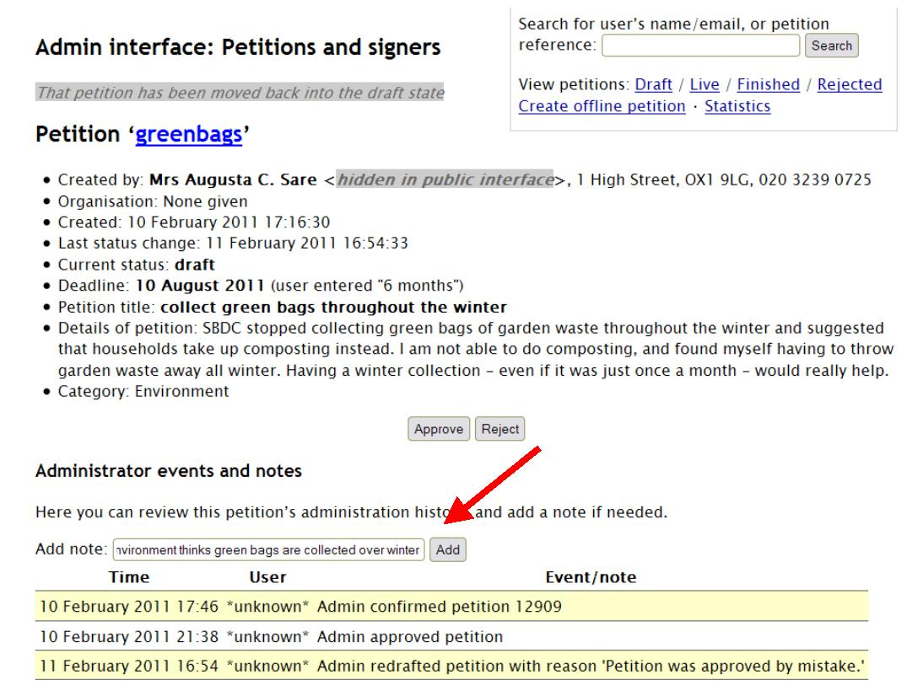
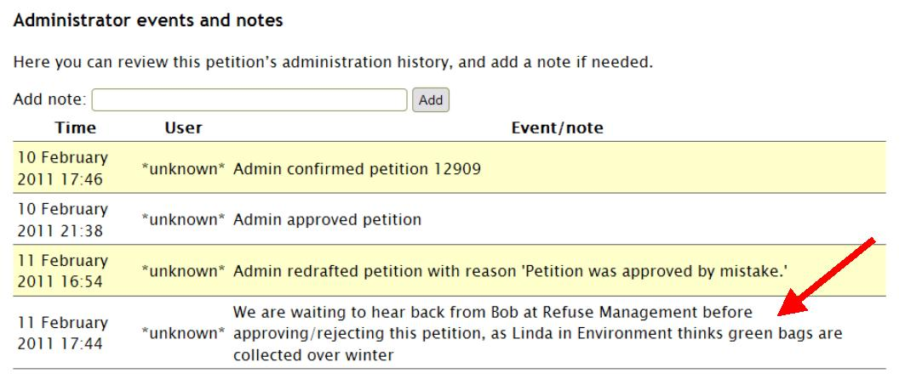

The admin history of a petition
The petitions system automatically makes notes to record events in the life of a petition, such as:
- Administrator approves a petition
- Administrator rejects a petition, with the reasons
- Signatures confirmed or removed
- Responses that the council has sent
- And everything else that happens to it!
You can view this record on the admin page for each petition under ‘Administrator events and notes’, and you can manually add notes of your own.
If there’s more than one person working on petitions admin, this section is useful to see what your colleagues have already done, and you can communicate with them by leaving messages. In the example below, one council officer is explaining to other staff members why a petition cannot yet be approved/rejected.
To leave a note, simply write the note in the box under ‘Administrator events and notes’ and click ‘Add’:
The new note is then listed along with the other notes and events in this section:
It is not possible to delete/edit a note, but a further note can be left if need be, correcting the previous one.
(Note that these screenshots have been taken from the demo site, which is why the user is listed as ‘unknown’ - in a live council site the name of the user would be shown.)